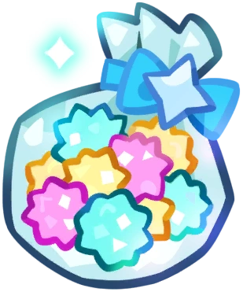

# HOW TO PLAY STELLAR HUNTER
Jan 15, 2025

I wanted to write this in case the game instructions weren't that simple to understand, since I'm terrible at explaining. So! Basically, you just need to head to the credits section and click on the stars falling in the sky. I recommend doing this best starting at 7 PM, which is when there are the most falling stars and rare stars can appear. Depending on the month, zodiac stars will fall, so pay attention to that! And that's it! It's really a simple game, but I hope people can enjoy it a bit. And remember: don't delete your local storage! if you don't want to lose all your progress.


 Home
Home About
About Social
Social Support
Support Tos
Tos Tools
Tools Blog
Blog Resources
Resources Software
Software Credits
Credits Workstation
Workstation Sitemap
Sitemap